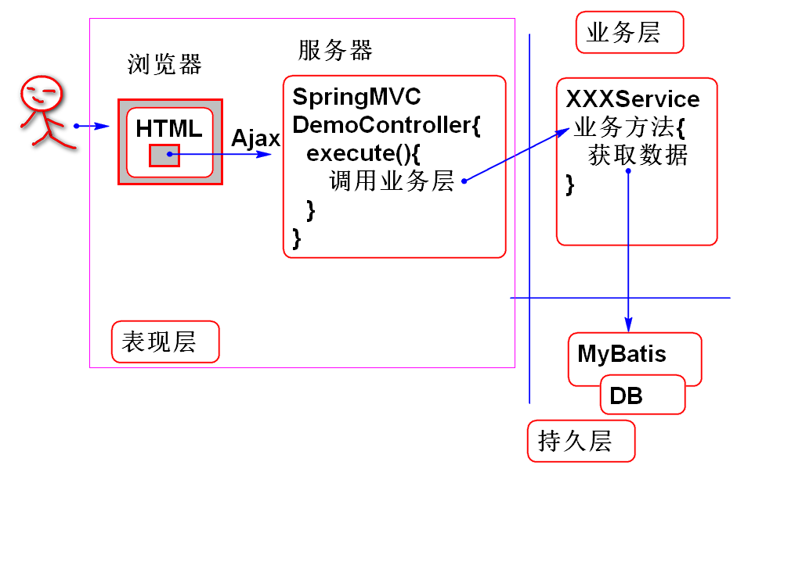
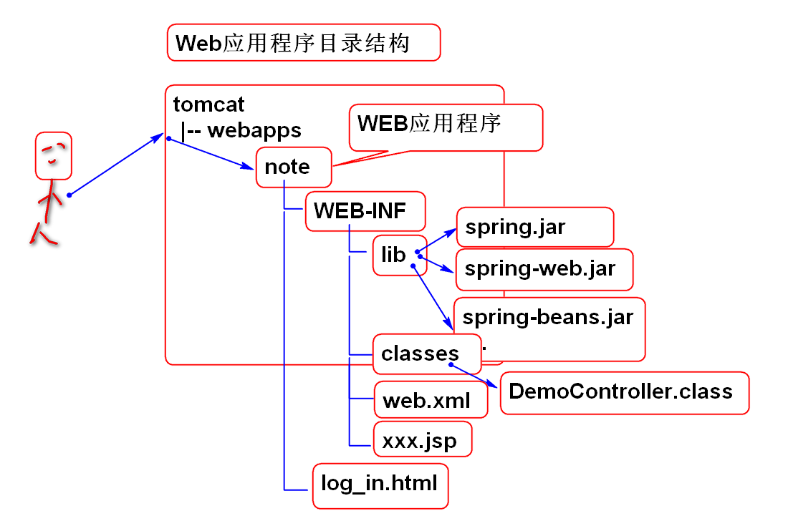
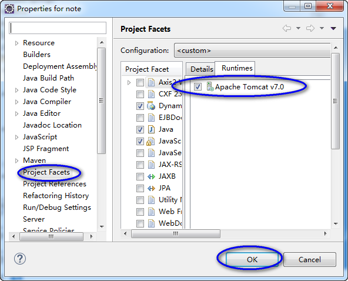

采用3层结构

WEB 应用程序目录参考：

搭建步骤：
1.创建Maven war项目导入Spring MVC包 pom.xml:
<dependency>
<groupId>spring-webmvc</groupId>
<artifactId>spring-webmvc</artifactId>
<version>3.2.8.RELEASE</version>
</dependency>
<dependency>
<groupId>org.springframework</groupId>
<artifactId>spring-web</artifactId>
<version>3.2.8.RELEASE</version>
</dependency>
<dependency>
<groupId>org.springframework</groupId>
<artifactId>spring-context</artifactId>
<version>3.2.8.RELEASE</version>
</dependency>
<dependency>
<groupId>org.springframework</groupId>
<artifactId>spring-beans</artifactId>
<version>3.2.8.RELEASE</version>
</dependency>
<dependency>
<groupId>com.fasterxml.jackson.core</groupId>
<artifactId>jackson-databind</artifactId>
<version>2.3.4</version>
</dependency>
2.在web.xml中配置Spring MVC的主控制器
<servlet>
<servlet-name>mvc</servlet-name>
<servlet-class>
org.springframework.web.servlet.DispatcherServlet
</servlet-class>
<init-param>
<param-name>contextConfigLocation</param-name>
<param-value>classpath:spring-*.xml</param-value>
</init-param>
<load-on-startup>1</load-on-startup>
</servlet>
<servlet-mapping>
<servlet-name>mvc</servlet-name>
<url-pattern>*.do</url-pattern>
</servlet-mapping>
3.在resource中添加Spring配置文件 spring-web.xml：
<?xml version="1.0" encoding="UTF-8"?>
<beans xmlns="http://www.springframework.org/schema/beans"
xmlns:xsi="http://www.w3.org/2001/XMLSchema-instance"
xmlns:context="http://www.springframework.org/schema/context"
xmlns:jdbc="http://www.springframework.org/schema/jdbc"
xmlns:jee="http://www.springframework.org/schema/jee"
xmlns:tx="http://www.springframework.org/schema/tx"
xmlns:aop="http://www.springframework.org/schema/aop"
xmlns:mvc="http://www.springframework.org/schema/mvc"
xmlns:util="http://www.springframework.org/schema/util"
xmlns:jpa="http://www.springframework.org/schema/data/jpa"
xsi:schemaLocation="
http://www.springframework.org/schema/beans http://www.springframework.org/schema/beans/spring-beans-3.2.xsd
http://www.springframework.org/schema/context http://www.springframework.org/schema/context/spring-context-3.2.xsd
http://www.springframework.org/schema/jdbc http://www.springframework.org/schema/jdbc/spring-jdbc-3.2.xsd
http://www.springframework.org/schema/jee http://www.springframework.org/schema/jee/spring-jee-3.2.xsd
http://www.springframework.org/schema/tx http://www.springframework.org/schema/tx/spring-tx-3.2.xsd
http://www.springframework.org/schema/data/jpa http://www.springframework.org/schema/data/jpa/spring-jpa-1.3.xsd
http://www.springframework.org/schema/aop http://www.springframework.org/schema/aop/spring-aop-3.2.xsd
http://www.springframework.org/schema/mvc http://www.springframework.org/schema/mvc/spring-mvc-3.2.xsd
http://www.springframework.org/schema/util http://www.springframework.org/schema/util/spring-util-3.2.xsd">
<!-- 扫描到控制器组件 -->
<context:component-scan
base-package="cn.tedu.note.web"/>
<!-- 配置注解版本的 spring-mvc -->
<mvc:annotation-driven/>
</beans>
4.在cn.tedu.note.web包中添加测试控制器类 DemoController.java:
@Controller
@RequestMapping("/demo")
public class DemoController {
@RequestMapping("/hello.do")
@ResponseBody
public Object hello(){
return
new String[]{"Hello", "World!"};
}
}
5.在项目Properties中选择运行环境为Tomcat Server：

6.部署项目到Tomcate，并且启动浏览器进行测试
请求：http://localhost:8080/note/demo/hello
如果有异常，请进行适当的调试， 解决错误...
7.导入MyBatis相关的包 pom.xml:
<dependency>
<groupId>org.mybatis</groupId>
<artifactId>mybatis</artifactId>
<version>3.2.4</version>
</dependency>
<dependency>
<groupId>org.mybatis</groupId>
<artifactId>mybatis-spring</artifactId>
<version>1.2.4</version>
</dependency>
<dependency>
<groupId>mysql</groupId>
<artifactId>mysql-connector-java</artifactId>
<version>5.0.8</version>
</dependency>
<dependency>
<groupId>commons-dbcp</groupId>
<artifactId>commons-dbcp</artifactId>
<version>1.4</version>
</dependency>
<dependency>
<groupId>org.springframework</groupId>
<artifactId>spring-jdbc</artifactId>
<version>3.2.8.RELEASE</version>
</dependency>
<dependency>
<groupId>junit</groupId>
<artifactId>junit</artifactId>
<version>4.12</version>
<scope>test</scope>
</dependency>
需要导入JUnit 用于测试时候使用。
8.添加spring-mybatis.xml文件用于配置MyBatis
<?xml version="1.0" encoding="UTF-8"?>
<beans xmlns="http://www.springframework.org/schema/beans"
xmlns:xsi="http://www.w3.org/2001/XMLSchema-instance"
xmlns:context="http://www.springframework.org/schema/context"
xmlns:jdbc="http://www.springframework.org/schema/jdbc"
xmlns:jee="http://www.springframework.org/schema/jee"
xmlns:tx="http://www.springframework.org/schema/tx"
xmlns:aop="http://www.springframework.org/schema/aop"
xmlns:mvc="http://www.springframework.org/schema/mvc"
xmlns:util="http://www.springframework.org/schema/util"
xmlns:jpa="http://www.springframework.org/schema/data/jpa"
xsi:schemaLocation="
http://www.springframework.org/schema/beans http://www.springframework.org/schema/beans/spring-beans-3.2.xsd
http://www.springframework.org/schema/context http://www.springframework.org/schema/context/spring-context-3.2.xsd
http://www.springframework.org/schema/jdbc http://www.springframework.org/schema/jdbc/spring-jdbc-3.2.xsd
http://www.springframework.org/schema/jee http://www.springframework.org/schema/jee/spring-jee-3.2.xsd
http://www.springframework.org/schema/tx http://www.springframework.org/schema/tx/spring-tx-3.2.xsd
http://www.springframework.org/schema/data/jpa http://www.springframework.org/schema/data/jpa/spring-jpa-1.3.xsd
http://www.springframework.org/schema/aop http://www.springframework.org/schema/aop/spring-aop-3.2.xsd
http://www.springframework.org/schema/mvc http://www.springframework.org/schema/mvc/spring-mvc-3.2.xsd
http://www.springframework.org/schema/util http://www.springframework.org/schema/util/spring-util-3.2.xsd">
</beans>
9.在spring-mybatis.xml中添加数据库连接池配置：
<bean id="dataSource"
class="org.apache.commons.dbcp.BasicDataSource">
<property name="driverClassName"
value="com.mysql.jdbc.Driver"/>
<property name="url"
value="jdbc:mysql://localhost:3306/cloud_note"/>
<property name="username"
value="root"/>
<property name="password"
value="root"/>
</bean>
提示：password属性的值是MySQL数据库安装时候的密码！！
10.利用Junit测试DataSource：
public class MyBatisTestCase {
ClassPathXmlApplicationContext ctx;
@Before
public void init(){
ctx = new ClassPathXmlApplicationContext(
"spring-web.xml",
"spring-mybatis.xml");
}
@Test
public void testDataSource(){
DataSource ds = ctx.getBean(
"dataSource", DataSource.class);
System.out.println(ds);
}
}
@Before 注解会在测试方法之前咨询，这里用于初始化 Spring 容器ctx。
11.添加MyBatis SqlSessionFactory 配置：
<bean id="sqlSessionFactory"
class="org.mybatis.spring.SqlSessionFactoryBean">
<property name="dataSource"
ref="dataSource"/>
</bean>
12.测试 SqlSessionFactory
@Test
public void testSqlSessionFactory(){
SqlSessionFactory factory=
ctx.getBean("sqlSessionFactory",
SqlSessionFactory.class);
System.out.println(factory);
}
13.添加Mapper接口扫描器配置：
<bean id="mapperScanner"
class="org.mybatis.spring.mapper.MapperScannerConfigurer">
<property name="sqlSessionFactory"
ref="sqlSessionFactory"/>
<property name="basePackage"
value="cn.tedu.note.dao"/>
</bean>
14.测试 mapperScanner
@Test
public void testMapperScanner(){
MapperScannerConfigurer scanner=
ctx.getBean("mapperScanner",
MapperScannerConfigurer.class);
System.out.println(scanner);
}
15.在cn.tedu.note.dao包中添加Mapper接口 UserDao.java：
public interface UserDao {
void saveUser(User user);
}
提示：一定放到cn.tedu.note.dao包中，与配置文件相呼应！！
16.根据数据库的表结构添加实体类：
表结构： desc cn_user;
+------------------+--------------+------+-----+---------+-------+
| Field | Type | Null | Key | Default | Extra |
+------------------+--------------+------+-----+---------+-------+
| cn_user_id | varchar(100) | NO | PRI | NULL | |
| cn_user_name | varchar(100) | YES | | NULL | |
| cn_user_password | varchar(100) | YES | | NULL | |
| cn_user_token | varchar(100) | YES | | NULL | |
| cn_user_nick | varchar(100) | YES | | NULL | |
+------------------+--------------+------+-----+---------+-------+
实体类：
public class User implements Serializable{
private static final long serialVersionUID = -2677335708367280584L;
private String id;
private String name;
private String password;
private String token;
private String nick;
public User() {
}
public User(String id, String name, String password, String token, String nick) {
super();
this.id = id;
this.name = name;
this.password = password;
this.token = token;
this.nick = nick;
}
public String getId() {
return id;
}
public void setId(String id) {
this.id = id;
}
public String getName() {
return name;
}
public void setName(String name) {
this.name = name;
}
public String getPassword() {
return password;
}
public void setPassword(String password) {
this.password = password;
}
public String getToken() {
return token;
}
public void setToken(String token) {
this.token = token;
}
public String getNick() {
return nick;
}
public void setNick(String nick) {
this.nick = nick;
}
@Override
public int hashCode() {
final int prime = 31;
int result = 1;
result = prime * result + ((id == null) ? 0 : id.hashCode());
return result;
}
@Override
public boolean equals(Object obj) {
if (this == obj)
return true;
if (obj == null)
return false;
if (getClass() != obj.getClass())
return false;
User other = (User) obj;
if (id == null) {
if (other.id != null)
return false;
} else if (!id.equals(other.id))
return false;
return true;
}
@Override
public String toString() {
return "User [id=" + id + ", name=" + name + ", password=" + password + ", token=" + token + ", nick=" + nick
+ "]";
}
}
提示：实体类要遵守Java Bean规范
16.在src/main/resource/mappers中添加 Mapper 映射文件 UserMapper.xml:
<?xml version="1.0" encoding="UTF-8" ?>
<!DOCTYPE mapper PUBLIC "-//ibatis.apache.org//DTD Mapper 3.0//EN"
"http://ibatis.apache.org/dtd/ibatis-3-mapper.dtd">
<mapper namespace="cn.tedu.note.dao.UserDao">
<insert id="saveUser"
parameterType="cn.tedu.note.entity.User">
insert into cn_user
(cn_user_id,
cn_user_name,
cn_user_password,
cn_user_token,
cn_user_nick)
values
(#{id}, #{name}, #{password},
#{token}, #{nick})
</insert>
</mapper>
其中insert语句与Mapper接口中的saveUser方法对应。
17.更新SqlSessionFactory的配置，添加映射文件位置：
<bean id="sqlSessionFactory"
class="org.mybatis.spring.SqlSessionFactoryBean">
<property name="dataSource"
ref="dataSource"/>
<!-- mapper文件存储在
src/main/resources/mappers 文件夹 -->
<property name="mapperLocations"
value="classpath:mappers/*.xml"/>
</bean>
18.测试：
@Test
public void testSaveUser(){
UserDao dao = ctx.getBean(
"userDao", UserDao.class);
User user=new User("123", "Tom",
"123", "", "Cat");
dao.saveUser(user);
//select * from cn_user where cn_user_id='123'
}
测试结果在数据库中查询：
select * from cn_user where cn_user_id='123'
19.添加读取用户信息方法 UserDao.java:
User findUserById(String id);
20.在UserMapper.xml中添加SQL语句：
<select id="findUserById"
parameterType="string"
resultType="cn.tedu.note.entity.User">
select
cn_user_id as id,
cn_user_name as name,
cn_user_password as password,
cn_user_token as token,
cn_user_nick as nick
from
cn_user
where
cn_user_id=#{id}
</select>
21.测试：
@Test
public void testFindUserById(){
UserDao dao = ctx.getBean(
"userDao", UserDao.class);
String id="123";
User user=dao.findUserById(id);
System.out.println(user);
}
注意: 返回user信息要包含全部的属性数据。